The Passover With The Disciples (The Last Supper)
Then came the day of unleavened bread, when the passover must be killed.
And he sent Peter and John, saying, Go and prepare us the passover, that we may eat.
And they said unto him, Where wilt thou that we prepare?
And he said unto them, Behold, when ye are entered into the city, there shall a man meet you, bearing a pitcher of water; follow him into the house where he entereth in.
And ye shall say unto the goodman of the house, The Master saith unto thee, Where is the guestchamber, where I shall eat the passover with my disciples?
And he shall shew you a large upper room furnished: there make ready.
And they went, and found as he had said unto them: and they made ready the passover.
Luke 22:7-13
- 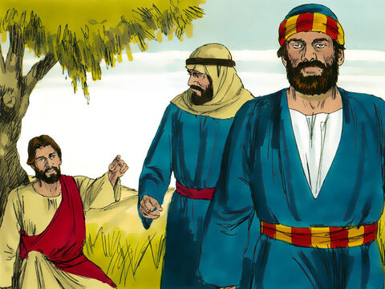
- 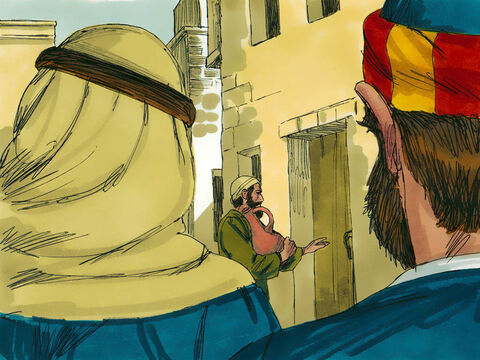
- 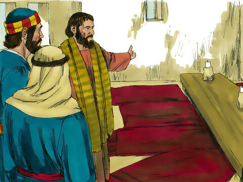
- 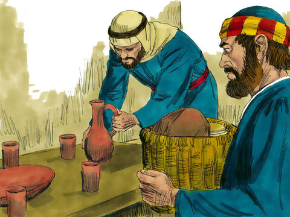
Now before the feast of the passover, when Jesus knew that his hour was come that he should depart out of this world unto the Father, having loved his own which were in the world, he loved them unto the end.
And supper being ended, the devil having now put into the heart of Judas Iscariot, Simon's son, to betray him;
Jesus knowing that the Father had given all things into his hands, and that he was come from God, and went to God;
He riseth from supper, and laid aside his garments; and took a towel, and girded himself.
After that he poureth water into a bason, and began to wash the disciples' feet, and to wipe them with the towel wherewith he was girded.
Then cometh he to Simon Peter: and Peter saith unto him, Lord, dost thou wash my feet?
Jesus answered and said unto him, What I do thou knowest not now; but thou shalt know hereafter.
Peter saith unto him, Thou shalt never wash my feet. Jesus answered him, If I wash thee not, thou hast no part with me.
Simon Peter saith unto him, Lord, not my feet only, but also my hands and my head.
Jesus saith to him, He that is washed needeth not save to wash his feet, but is clean every whit: and ye are clean, but not all.
For he knew who should betray him; therefore said he, Ye are not all clean.
So after he had washed their feet, and had taken his garments, and was set down again, he said unto them, Know ye what I have done to you?
Ye call me Master and Lord: and ye say well; for so I am.
If I then, your Lord and Master, have washed your feet; ye also ought to wash one another's feet.
For I have given you an example, that ye should do as I have done to you.
Verily, verily, I say unto you, The servant is not greater than his lord; neither he that is sent greater than he that sent him.
If ye know these things, happy are ye if ye do them.
I speak not of you all: I know whom I have chosen: but that the scripture may be fulfilled, He that eateth bread with me hath lifted up his heel against me.
Now I tell you before it come, that, when it is come to pass, ye may believe that I am he.
Verily, verily, I say unto you, He that receiveth whomsoever I send receiveth me; and he that receiveth me receiveth him that sent me.
When Jesus had thus said, he was troubled in spirit, and testified, and said, Verily, verily, I say unto you, that one of you shall betray me.
Then the disciples looked one on another, doubting of whom he spake.
Now there was leaning on Jesus' bosom one of his disciples, whom Jesus loved.
Simon Peter therefore beckoned to him, that he should ask who it should be of whom he spake.
He then lying on Jesus' breast saith unto him, Lord, who is it?
Jesus answered, He it is, to whom I shall give a sop, when I have dipped it. And when he had dipped the sop, he gave it to Judas Iscariot, the son of Simon.
And after the sop Satan entered into him. Then said Jesus unto him, That thou doest, do quickly.
Now no man at the table knew for what intent he spake this unto him.
For some of them thought, because Judas had the bag, that Jesus had said unto him, Buy those things that we have need of against the feast; or, that he should give something to the poor.
He then having received the sop went immediately out: and it was night.
John 13:1-30
- 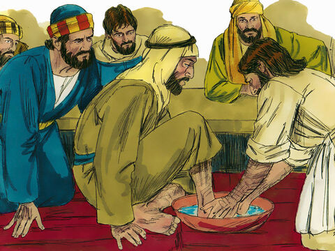
- 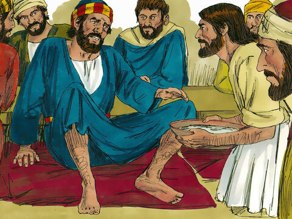
- 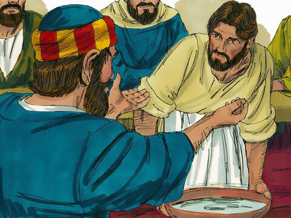
- 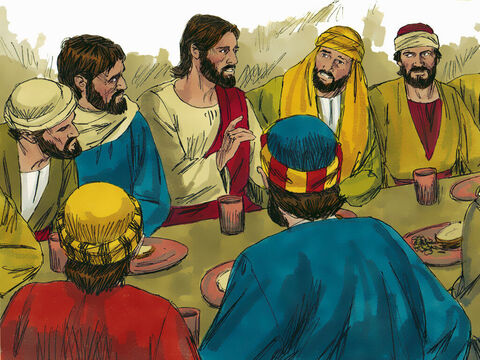
- 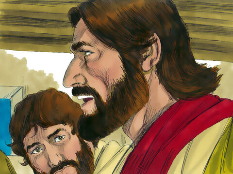
- 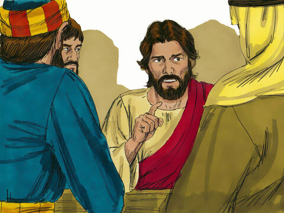
- 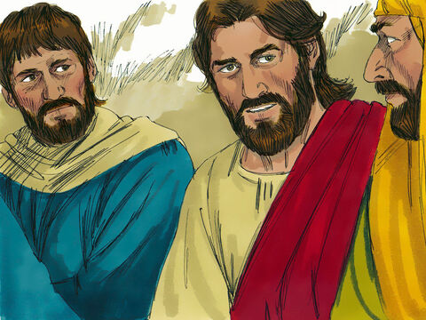
- 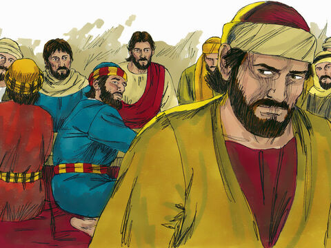
And as they were eating, Jesus took bread, and blessed it, and brake it, and gave it to the disciples, and said, Take, eat; this is my body.
And he took the cup, and gave thanks, and gave it to them, saying, Drink ye all of it;
For this is my blood of the new testament, which is shed for many for the remission of sins.
But I say unto you, I will not drink henceforth of this fruit of the vine, until that day when I drink it new with you in my Father's kingdom.
And when they had sung an hymn, they went out into the mount of Olives.
Matthew 26:26-30
- 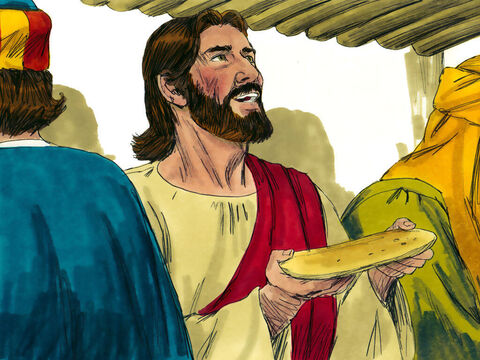
- 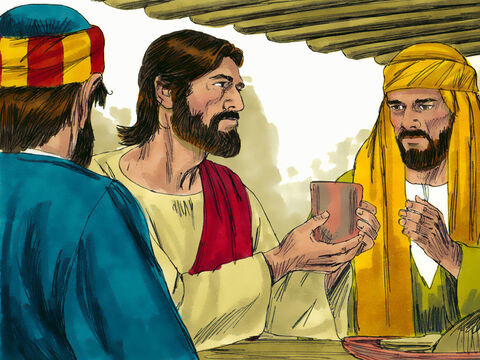
- 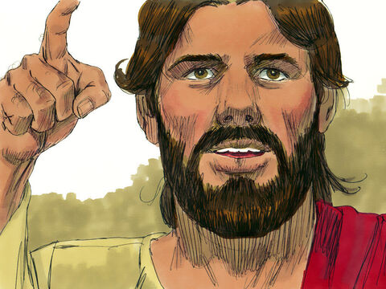
- 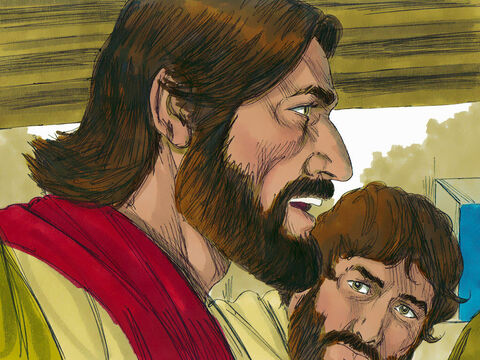